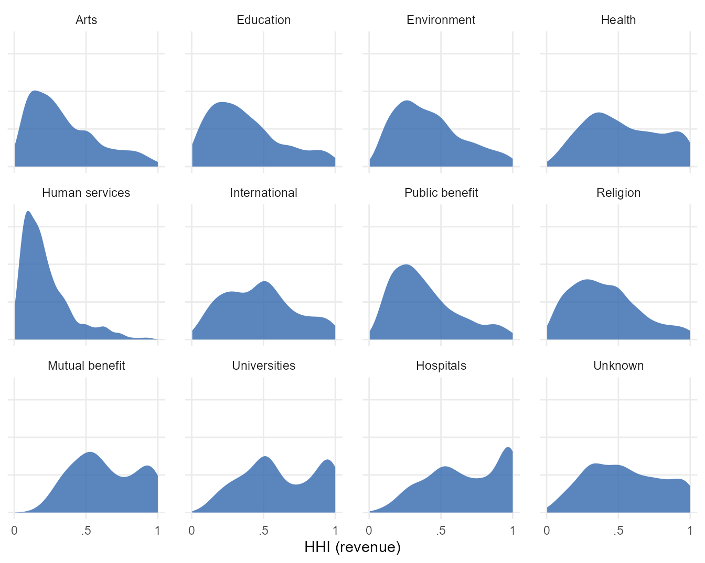
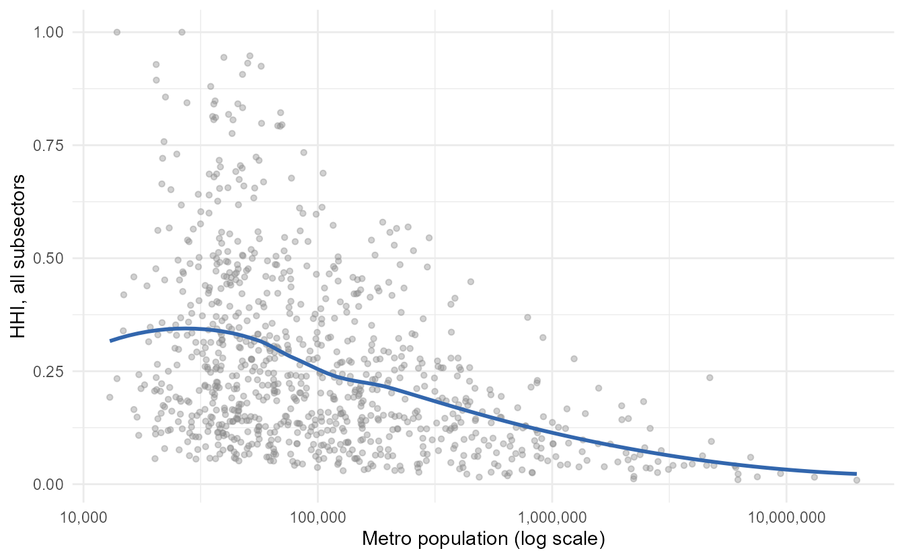
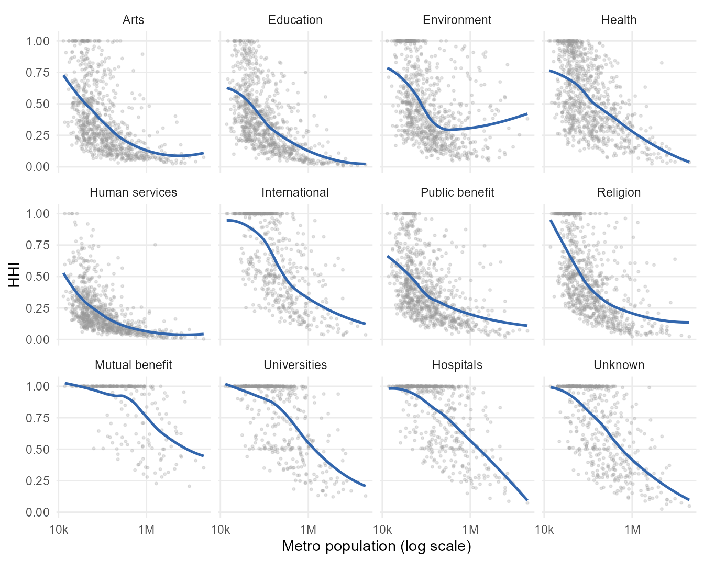
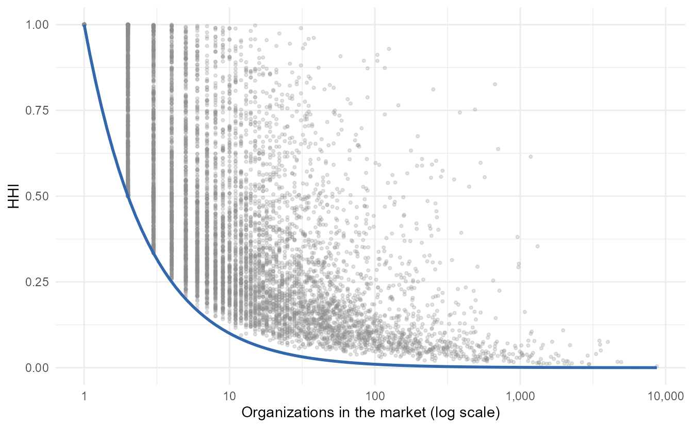
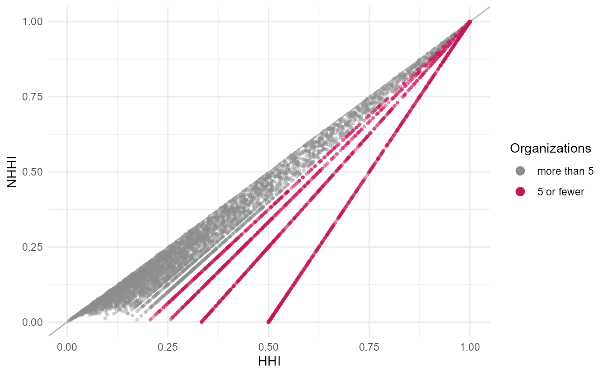

The Herfindahl-Hirschman Index (HHI) is the standard measure of market concentration. It is the sum of squared market shares:
where is an organization’s resource (revenue, expenses or net assets). HHI runs from , when all organizations are the same size, to 1, when one organization holds everything. Squaring the shares gives large organizations most of the weight.
Because the floor depends on , a market of two equal organizations scores 0.5 while a market of 50 equal organizations scores 0.02. The normalized HHI removes that floor so every market runs from 0 to 1:
get_hhi() returns HHI and get_nhhi()
returns both.
library( npcompete )
library( ggplot2 )
# NTMAJ12 labels for the NTEEV2 major groups
ntmaj12 <- c( ART = "Arts", EDU = "Education",
ENV = "Environment", HEL = "Health",
HMS = "Human services", IFA = "International",
PSB = "Public benefit", REL = "Religion",
MMB = "Mutual benefit", UNI = "Universities",
HOS = "Hospitals", UNU = "Unknown" )A toy market
Three markets: four equal organizations, one dominant organization with three small ones, and two equal organizations.
GEO <- rep( c( "equal", "dominant", "duopoly" ), c( 4, 4, 2 ) )
TOTREV <- c( 25, 25, 25, 25, 70, 10, 10, 10, 50, 50 )
toy <- data.frame( GEO, SUB = "ART", YEAR = 2020, TOTREV )
h <- get_nhhi( toy, geography = "GEO", subsector = "SUB", year = "YEAR" )
subset( h, GEO != "ALL" & SUB != "ALL" ) |> knitr::kable( digits = 3 )| GEO | SUB | YEAR | N | TOTREV | HHI | NHHI |
|---|---|---|---|---|---|---|
| dominant | ART | 2020 | 4 | 100 | 0.52 | 0.36 |
| duopoly | ART | 2020 | 2 | 100 | 0.50 | 0.00 |
| equal | ART | 2020 | 4 | 100 | 0.25 | 0.00 |
The equal and duopoly markets are both perfectly balanced, so their NHHI is 0, but their HHI differs because the duopoly has fewer organizations. The dominant market has the highest HHI and a clearly positive NHHI.
Computing HHI from org-level data
npo_panel_sample holds every 501(c)(3) filer in Vermont
from 2015 to 2019. Each row is an organization-year. The defaults expect
NTEEV2, TOTREV and TAXYEAR
columns; here the market is the county.
vt <- get_nhhi( npo_panel_sample, geography = "COUNTY_FIPS" )
# all subsectors combined, one row per county
vt19 <- subset( vt, YEAR == 2019 & SUB == "ALL" & GEO != "ALL" )
vt19[ order( vt19$HHI ), ] |> knitr::kable( digits = 3, row.names = FALSE )| GEO | SUB | YEAR | N | TOTREV | HHI | NHHI |
|---|---|---|---|---|---|---|
| 50027 | ALL | 2019 | 209 | 531664166 | 0.078 | 0.074 |
| 50025 | ALL | 2019 | 181 | 493992132 | 0.122 | 0.117 |
| 50023 | ALL | 2019 | 251 | 892948016 | 0.128 | 0.124 |
| 50013 | ALL | 2019 | 15 | 5953848 | 0.139 | 0.077 |
| 50003 | ALL | 2019 | 124 | 407276766 | 0.225 | 0.219 |
| 50009 | ALL | 2019 | 7 | 660374 | 0.227 | 0.098 |
| 50017 | ALL | 2019 | 73 | 134978038 | 0.228 | 0.217 |
| 50015 | ALL | 2019 | 83 | 164242466 | 0.237 | 0.228 |
| 50005 | ALL | 2019 | 82 | 213517887 | 0.240 | 0.230 |
| 50007 | ALL | 2019 | 414 | 3104992885 | 0.268 | 0.267 |
| 50019 | ALL | 2019 | 54 | 193858577 | 0.322 | 0.309 |
| 50011 | ALL | 2019 | 53 | 214552885 | 0.360 | 0.348 |
| 50001 | ALL | 2019 | 123 | 655600800 | 0.397 | 0.392 |
| 50021 | ALL | 2019 | 117 | 465598138 | 0.423 | 0.418 |
Rows with SUB = "ALL" pool every subsector in a county,
and rows with GEO = "ALL" pool every county in a
subsector.
HHI across US metro areas
Vermont has only 14 counties. cbsa_metrics holds every
metric for every US metro and micro area (CBSA) in 2019, by NTEE major
group, measured on total revenue. It was built with
get_all_metrics().
metros <- cbsa_metrics
metros$NTMAJ12 <- factor( ntmaj12[ metros$SUB ], levels = ntmaj12 )
# subsector markets that have at least one organization
# (a few markets with zero total revenue have no HHI)
markets <- subset( metros, SUB != "ALL" & N > 0 & !is.na( HHI ) )Descriptive statistics by subsector
markets |>
dplyr::group_by( NTMAJ12 ) |>
dplyr::summarize(
metros = dplyr::n(),
median_N = median( N ),
HHI_p25 = quantile( HHI, 0.25, na.rm = TRUE ),
HHI_median = median( HHI, na.rm = TRUE ),
HHI_p75 = quantile( HHI, 0.75, na.rm = TRUE ),
NHHI_median = median( NHHI, na.rm = TRUE ),
monopoly = mean( N == 1 )
) |>
knitr::kable( digits = 2 )| NTMAJ12 | metros | median_N | HHI_p25 | HHI_median | HHI_p75 | NHHI_median | monopoly |
|---|---|---|---|---|---|---|---|
| Arts | 894 | 9 | 0.16 | 0.30 | 0.53 | 0.17 | 0.06 |
| Education | 916 | 12 | 0.18 | 0.33 | 0.53 | 0.24 | 0.02 |
| Environment | 872 | 6 | 0.25 | 0.43 | 0.70 | 0.25 | 0.12 |
| Health | 912 | 9 | 0.33 | 0.52 | 0.80 | 0.44 | 0.05 |
| Human services | 936 | 36 | 0.10 | 0.17 | 0.29 | 0.14 | 0.01 |
| International | 567 | 3 | 0.37 | 0.64 | 1.00 | 0.51 | 0.33 |
| Public benefit | 919 | 11 | 0.21 | 0.34 | 0.53 | 0.25 | 0.03 |
| Religion | 865 | 6 | 0.25 | 0.43 | 0.66 | 0.24 | 0.12 |
| Mutual benefit | 259 | 1 | 0.70 | 1.00 | 1.00 | 1.00 | 0.58 |
| Universities | 489 | 2 | 0.55 | 0.99 | 1.00 | 0.98 | 0.45 |
| Hospitals | 538 | 2 | 0.57 | 0.96 | 1.00 | 0.94 | 0.36 |
| Unknown | 555 | 2 | 0.45 | 0.79 | 1.00 | 0.68 | 0.35 |
monopoly is the share of metros where the subsector has
a single organization, which scores HHI = NHHI = 1. Hospitals,
universities and mutual benefit organizations are thin in most metros,
so their HHIs are high almost by construction. Human services, with a
median of three dozen organizations per metro, is the least concentrated
subsector.
Distribution by subsector
Single-organization markets are left out of the density plots; they are a spike at 1.
ggplot( subset( markets, N > 1 ), aes( HHI ) ) +
geom_density( fill = "#3266ad", colour = NA, alpha = 0.8 ) +
facet_wrap( ~ NTMAJ12, ncol = 4 ) +
scale_x_continuous( breaks = c( 0, 0.5, 1 ), labels = c( "0", ".5", "1" ) ) +
labs( x = "HHI (revenue)", y = NULL ) +
theme_minimal() +
theme( axis.text.y = element_blank(),
panel.grid.minor = element_blank(),
panel.spacing.x = unit( 1, "lines" ) )
The US antitrust guidelines describe markets with HHI below 0.15 as unconcentrated, 0.15 to 0.25 as moderately concentrated and above 0.25 as highly concentrated (on the 0-10,000 scale: 1,500 and 2,500). By that yardstick most nonprofit subsector markets are highly concentrated:
cuts <- c( 0, 0.15, 0.25, 1 )
band_names <- c( "unconcentrated", "moderate", "high" )
markets$HHI_BAND <- cut( markets$HHI, cuts, band_names, include.lowest = TRUE )
prop.table( table( markets$NTMAJ12, markets$HHI_BAND ), margin = 1 ) |>
round( 2 ) |>
knitr::kable()| unconcentrated | moderate | high | |
|---|---|---|---|
| Arts | 0.23 | 0.18 | 0.59 |
| Education | 0.19 | 0.17 | 0.64 |
| Environment | 0.10 | 0.14 | 0.76 |
| Health | 0.05 | 0.10 | 0.85 |
| Human services | 0.42 | 0.26 | 0.32 |
| International | 0.06 | 0.08 | 0.85 |
| Public benefit | 0.13 | 0.19 | 0.68 |
| Religion | 0.13 | 0.14 | 0.74 |
| Mutual benefit | 0.00 | 0.01 | 0.99 |
| Universities | 0.01 | 0.04 | 0.95 |
| Hospitals | 0.01 | 0.02 | 0.97 |
| Unknown | 0.03 | 0.05 | 0.92 |
HHI and metro size
Larger metros have more organizations, so concentration falls with population. The line is a loess smooth across metros, all subsectors combined.
all_subs <- subset( metros, SUB == "ALL" & !is.na( POP ) )
ggplot( all_subs, aes( POP, HHI ) ) +
geom_point( colour = "grey55", alpha = 0.4, size = 1.2 ) +
geom_smooth( method = "loess", formula = y ~ x, se = FALSE,
colour = "#3266ad", linewidth = 1 ) +
scale_x_log10( labels = scales::label_comma() ) +
labs( x = "Metro population (log scale)", y = "HHI, all subsectors" ) +
theme_minimal()
By subsector:
ggplot( subset( markets, !is.na( POP ) ), aes( POP, HHI ) ) +
geom_point( colour = "grey60", alpha = 0.25, size = 0.6 ) +
geom_smooth( method = "loess", formula = y ~ x, se = FALSE,
colour = "#3266ad", linewidth = 0.9 ) +
facet_wrap( ~ NTMAJ12, ncol = 4 ) +
scale_x_log10( breaks = c( 1e4, 1e6 ), labels = c( "10k", "1M" ) ) +
labs( x = "Metro population (log scale)", y = "HHI" ) +
theme_minimal() +
theme( panel.grid.minor = element_blank() )
HHI versus NHHI
HHI cannot fall below (the curve). Small markets sit high on the chart partly because of that floor, which is the reason for the normalized index.
ggplot( markets, aes( N, HHI ) ) +
geom_point( colour = "grey55", alpha = 0.25, size = 0.8 ) +
geom_function( fun = function( x ) 1 / x, colour = "#3266ad",
linewidth = 1 ) +
scale_x_log10( labels = scales::label_comma() ) +
labs( x = "Organizations in the market (log scale)", y = "HHI" ) +
theme_minimal()
In large markets is close to zero and the two indices agree. They diverge only in markets with a handful of organizations:
ggplot( subset( markets, N > 1 ), aes( HHI, NHHI ) ) +
geom_abline( colour = "grey70" ) +
geom_point( aes( colour = N <= 5 ), alpha = 0.35, size = 0.8 ) +
scale_colour_manual( values = c( "TRUE" = "#c2185b", "FALSE" = "grey55" ),
labels = c( "TRUE" = "5 or fewer", "FALSE" = "more than 5" ),
name = "Organizations" ) +
guides( colour = guide_legend( override.aes = list( size = 3, alpha = 1 ) ) ) +
labs( x = "HHI", y = "NHHI" ) +
theme_minimal()
Notes
- HHI depends on how the market is defined. A metro-level subsector is a rough stand-in for the set of organizations that actually compete for the same donors, clients or grants.
- Single-organization markets score 1 on both indices. Filter on
Nto study competition among markets that have some. - HHI on revenue, expenses and net assets can differ a lot; pass a
different
resourceto compare them.